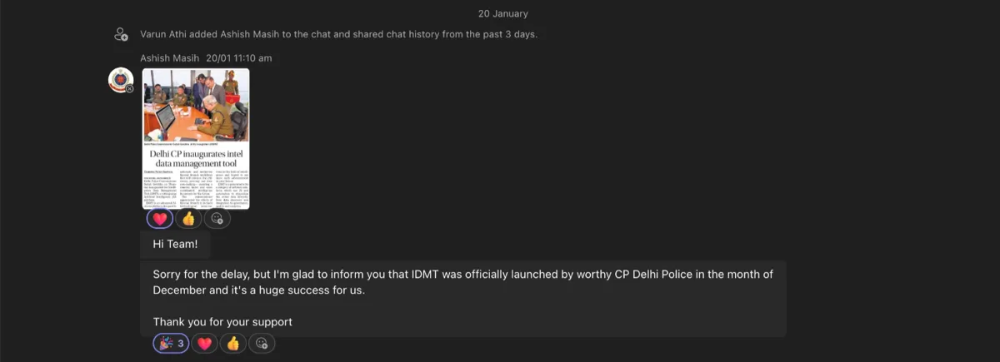

Case study 01 · Product redesign · Dashboard
Faster decisions, fewer errors. Redesigning a law enforcement intelligence dashboard.
In 30 seconds
- The problem: Delhi Police officers were abandoning forms midway because the intelligence tool was slow, confusing and tiring to use.
- What I did: Redesigned the full product as the only designer. 100+ screens across dashboard, forms, reports and AI tools.
- The result: Launched by the Commissioner of Delhi Police in December 2025. Two more divisions asked for the same system, which became two new government contracts.
The product and the people using it
The Intelligence Data Management Tool (IDMT) is the dashboard Delhi Police officers use every day to register programs, log intelligence inputs and generate official reports. A program is any event the force monitors: a political rally, a religious gathering, a community event. The tool was built by Tejis.ai for the Delhi Police Special Branch, with more forces in the pipeline, including Chennai, Salem and Tiruppur police.
Three very different people use the same screens:
- Field officers log intelligence inputs quickly, often under time pressure.
- Supervisors track program status across many events at once.
- Senior officers review reports and make approval decisions.
The problem: a real business need meeting a broken tool
The business need was legitimate. Law enforcement agencies wanted to replace fragmented, manual processes with one digital system for managing intelligence programs and producing reports for the chain of command.
The user need was not being met. The tool officers actually got had been built by developers thinking about data storage. Nobody had thought about the officer sitting in front of it under pressure. Many gave up filling forms midway, and in an intelligence system an incomplete record is an operational risk.

What was failing, specifically:
- No priority structure. Live, upcoming and past events sat in the same flat list. Nothing surfaced what needed attention right now.
- Cognitive overload. A single form had 11 horizontal tabs. Officers had to hunt across all of them to finish basic tasks, and many abandoned the form midway.
- Dangerous interactions. Delete sat right next to Save with identical styling. In this context that is an operational risk, not just bad design.
- Wrong reports sent. Report generation had no guidance, so officers printed the wrong report type and submitted it up the chain of command.
- Noise and inconsistency. Every text field had a full rich text toolbar, and the same kind of task was a popup in one place and a full page in another.
The tool was built for data entry, not for decisions made under pressure.
How I learned the workflow
This was a fast-moving startup, so research had to be lean. The product manager walked me through every core task step by step. I combined that with direct feedback from our point-of-contact officer and observations from onboarding sessions.
That trio stayed my working loop for the whole project. The product manager checked every major flow against how officers actually work, the developers told me early what would not fit the timeline, which is how the pinning system got cut, and the point-of-contact officer reviewed designs before anything went to build.
The clearest insight: officers needed to see their workload at a glance. They could not afford to read every row in a list. And trust in the tool was low because of past data entry mistakes, so preventing accidental actions mattered as much as speed.
The strategy: fix the foundation, then add AI
The product vision was simple to state and hard to hold on to: purpose-built for law enforcement, not a generic dashboard with a police logo on it. The delivery strategy had two phases:
- Phase 1: fix the foundation. Solve the core usability failures first. Clear hierarchy, structured forms, guided report generation. Ship something officers can actually use.
- Phase 2: layer AI on stability. AI Form Filler, Program Match, AI Notes and Visualize were designed and ready, but only on top of a stable foundation. Shipping AI on top of a broken product would have created more problems than it solved.
One principle filtered every decision: design for the person, not the data. What does this officer need to do right now, and what is in the way?
How the product is organised
Everything in the system lives under two top-level categories, because the work itself splits that way:
- Law and Order. Political gatherings, rallies, religious programs, community events. The primary category for the Special Branch.
- Crime. Theft, gang incidents, serious crimes, arrests. A separate workflow with its own form structure.
Five modules carry the navigation:
- Dashboard. Live, upcoming and completed programs at a glance.
- Programs. Create and manage programs, and fill their intelligence forms.
- Reports. Generate and submit PDF reports to senior officers.
- Updates. Alerts and status changes across programs.
- Calendar. A time-based view of everything scheduled.
One navigation decision worth naming: the sidebar collapses. Program cards are the officer's primary focus, so the chrome gives way to the content.

Three flows carry most of the work
- Creating and filling a program. Non-linear. An officer opens or creates a program, sees all 11 sections as a card grid, fills what is relevant in any order, saves, and returns later as intelligence develops. Progress indicators show what is done.
- Generating and submitting a report. Linear. Pick one of four report types (Active, Input, Alert or Event), let a three-step wizard guide data selection, review the populated report, export as PDF, submit.
- Triage on the dashboard. Urgency-first. Live events appear first with a blinking red indicator, today's programs sit right below, category filters narrow the list. Everything is scannable without opening a single record.
Matching the pattern to the flow, a card grid for non-linear work and a wizard for linear work, is the single thread that runs through the whole redesign.
Key decisions and their trade-offs
Every design decision buys something and costs something. These are the four that shaped the product, with what each one cost.
1. A visual language that belongs to its users
I chose dark navy as the base because it reads as calm and serious, and gold as the accent because it matches the uniform colours worn by Indian law enforcement officers. Two more colours carry meaning everywhere: a blinking red for live events and green for completed form sections.
I tried three background directions first: a subtle texture, a bright blue gradient, and a near-black flat tone. All three failed the same test. They could belong to any product. The final direction was a night aerial satellite view of India. Officers work with real events in real places, and showing the country from above grounded the tool in its purpose.


The trade-off: a dark theme on older government monitors can reduce readability. We knew this and planned a light mode for a later phase.
2. A homepage sorted by urgency
In the old tool an officer managing an active situation had to read everything to find what needed attention. The redesign puts today's and live events first, always. Upcoming events follow. That is how officers think about their day, so that is how the screen is ordered.
Each program became a card showing its category, venue, date, time and live status in one scannable unit. A small line at the bottom of each card shows which officer last updated the record and when. In a tool where many officers touch the same record, that one line builds accountability without adding a single extra step. Officers noticed it and said so.


Between those two sat seven documented versions. Ideas cut along the way: priority tags that crowded the cards, different card colours per section that made the screen feel like two products, and compact rows that hid too much information. Each cut taught us what officers actually needed: one card style, clear order, no decoration.


The trade-off: some officers preferred the old flat list purely because it was familiar. The new structure asks for a short learning curve, especially from older officers.
3. A card grid instead of tabs, because the work is not linear
This was the most critical fix in the whole product. Officers had no way to see what was filled and what was pending without clicking through all 11 tabs, and our point-of-contact officer confirmed they were regularly abandoning the form midway.
The key insight: filling a program form is not a linear task. An officer might add basic details first, come back hours later for venue information, then again to log incident details. A step-by-step wizard was considered and rejected, because it forces an order that does not match how the work happens. The solution was one screen with all 11 sections as collapsible cards:
- Everything visible at once. Officers see all sections and jump straight to the one they need. Not every section is mandatory, so they fill only what applies.
- Progress on every card. A fraction like 3/4 shows fields filled, with red for empty, gold for partial, green for complete. An officer returning midway can scan the whole form in seconds.
- Focused editing. Clicking a card opens a clean modal form, so the overview stays calm and the editing space stays focused.

The trade-off: a pinning system that let officers keep their most-used sections on top was fully designed but cut for development time. Officers cannot yet personalise their card layout.
4. A report wizard that prevents wrong prints
After every program, officers generate a PDF report and submit it to senior officers for approval. In the old tool there was no structure, and officers frequently printed the wrong report while believing it was correct. Reports go up the chain of command, so that is a real failure with real consequences.
Unlike the program form, report generation is a linear task. You pick the report type, select the data, then review and export. So here a three-step wizard was the right pattern. It guides each decision in order and confirms each step with a visible checkmark. Choosing the right pattern for each workflow, instead of one pattern everywhere, was a conscious decision.
The trade-off: experienced officers who know the flow may find the wizard slower. A power-user shortcut was discussed but not built in phase 1.
What was built
Phase 1, shipped:
- Dashboard. Live-first layout, card-based event view, the Law and Order vs Crime toggle, category filter chips, collapsible sidebar.
- Program management. The 11-section card grid, expand and collapse, completion indicators, modal form filling, and the last-updated accountability line.
- Report generation. Four report types, the three-step wizard, PDF export and submission, filtered report listing.
Phase 2, designed and ready to ship:
- AI Form Filler. Auto-fills fields from historical data.
- AI Program Match. Matches new programs to historical patterns.
- AI Notes. Turns typed or spoken observations, in English or Hindi, into clean structured notes. The officer changes nothing about how they work. In a multilingual force, that matters.
- Visualize. Generates visual summaries for briefings.

The design system underneath
One designer keeping 100+ screens consistent only works with a system. These are the rules that held it together:
- Four colours with fixed meanings. Navy for the base, gold for emphasis, blinking red only for live events, green only for complete. Nothing else competes.
- The card is the base unit. Every program, form section and report is a card. Consistent, scannable, collapsible.
- One completion indicator. A fraction plus a colour on every form card, so progress is readable without opening anything.
- Two-level interaction. Card grids for scanning, modals for filling. Clean separation between overview and detail.
- A dotted scroll affordance. A small cue that more fields exist below without expanding the card. A tiny detail that removes a moment of doubt.
The result
- The redesigned tool was launched by the Commissioner of Delhi Police in December 2025 and covered in the press.
- Two more high-profile divisions, Delhi Special Cell and Delhi Crime Branch, asked for the same system after seeing it in use. That became two new government contracts for the company, won on the product itself, with zero sales cost.
- Officers reported the new interface was much easier to navigate, especially program management and report generation.

The company closed in early 2026, so the expanded rollout did not happen. That was outside anyone's control on the design side.
How I would measure success
The company closed before the redesign could be instrumented, so I never got the numbers. These are the metrics I defined for it, tied to the problems we set out to fix:
- Form completion rate. The share of program forms finished without abandonment. Abandoned forms were the core failure of the old tool.
- Time to log an intelligence entry. From opening the form to saving it, split by officer rank.
- Report rework rate. How often a report is printed, found wrong and generated again. The wizard existed to push this toward zero.
- Weekly active officers. Whether constables, supervisors and senior officers all kept using the tool, not just the ranks required to.
Reflections, and what would come next
What worked: settling a strong visual language early paid off across 100+ screens. The card layout and completion indicators got the most positive officer feedback, and the report wizard solved a real operational failure.
What I would do differently: push harder for direct usability sessions with officers instead of relying on intermediaries, advocate more strongly for the pinning system, and document constraints like low-resolution government monitors earlier.
The lesson I keep: in high-stakes tools, clarity is a safety requirement, not a style choice. When an officer prints the wrong report because the screen was unclear, that has real consequences.
If the rollout had continued, the roadmap was already clear:
- The pinning system. Fully designed, cut from phase 1 for timeline.
- Light mode. The night satellite view shifts to a daytime view, so the visual metaphor survives the theme change.
- The full AI layer. All four phase 2 features, shipping on a foundation that could finally support them.